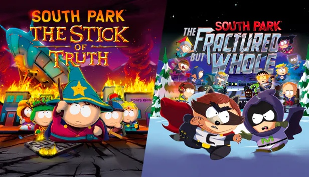

Навигация:
"Южный парк" как франшиза считается одной из самых популярных и прибыльных.
В официальных магазинах и в области масс-маркета можно найти кружки, брелоки, предметы одежды и пр. с дизайном персонажей из мультсериала.
Было выпущено несколько тематических книг: "South Park Conservatives: The Revolt Against Liberal Media Bias", "South Park and Philosophy: You Know, I Learned Something Today".
Авторы "Южного парка" принимали непосредственное участие и в создании компьютерных ролевых игр, таких как "South Park: The Stick of Truth", "South Park: The Fractured But Whole". Они основаны на сюжетных трилогиях, получивших свое развитие в оригинальном мультсериале.
Последней вышедшей игрой является мобильное приложение под названием "South Park: Phone Destroyer", сочетающее элементы жанров cтратегии в реальном времени и коллекционной карточной игры.
⟵ В начало!